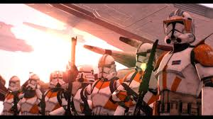

Clone Trooper Battalions
Clone commanders and their legions during the Clone Wars.
501st Legion
Commander: Captain Rex
Elite unit under Anakin Skywalker and Captain Rex. Key in major campaigns including Umbara and Coruscant.
212th Attack Battalion
Commander: Commander Cody

Under Obi-Wan Kenobi and Commander Cody. Known for the Battle of Utapau and high coordination.
104th Battalion (Wolfpack)
Commander: Commander Wolffe
Veteran unit led by Plo Koon and Wolffe. Respected for discipline and field success.
Galactic Marines
Commander: Commander Bacara
Heavy-assault division known for frontal tactics. Served under Ki-Adi-Mundi.
Coruscant Guard
Commander: Commander Fox
Military police force guarding Coruscant and Republic officials.